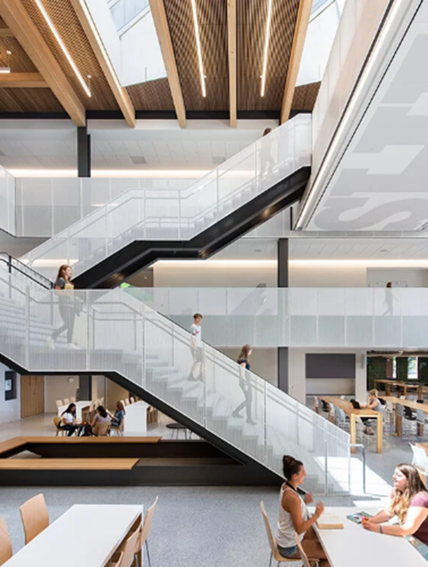
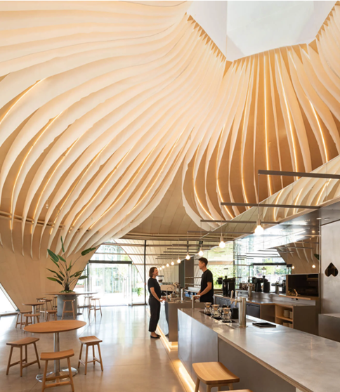
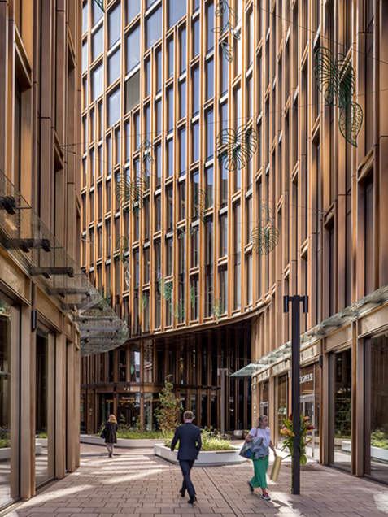
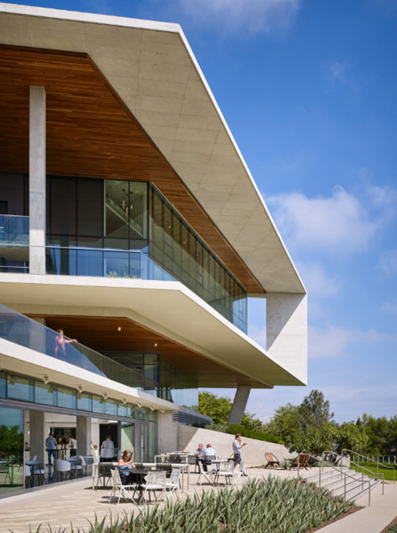

Our Process
From initial vision to final detail, our process ensures every project at Axis Design is thoughtfully curated. We partner with clients to navigate each phase—from discovery to realization—making sure design, function and sustainability are aligned.
Discovery — We begin by listening: understanding your goals,context and constraints.
 Concept — We explore form, light, materials and structure to shape the overall vision.
Refinement — We fine-tune the details: material selection, energy efficiency, and human scale.
 Realization — We oversee execution and ensure quality, timing and sustainability deliverables.
Our Philosophy
We believe great architecture emerges where bold ideas meet responsible design. We fuse clean geometry, natural materials and cutting-edge technologies to create spaces that stand the test of time. Form follows purpose—and people matter most.